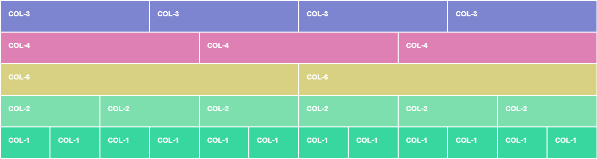

La grande force de Bootstrap est sans contre dit sa grille. Cette dernière est constituée de 12 colonnes. Ce nombre peut paraître arbitraire (pourquoi pas 10?), mais il est parfaitement logique puisqu'il est facilement divisible.
See the Pen Bootstrap - Columns by TIM Montmorency (@tim-momo) on CodePen.
Lors de la phase de design d'un site web, plusieurs types de divisions peuvent être utilisées. Par exemple, séparer un écran en deux parties égales. Dans ce cas, une grille de 12 ou de 10 colonnes fonctionne tout aussi bien, puisque le résultat donne 2x 6 colonnes ou 2x 5 colonnes.
See the Pen Bootstrap - Columns equals by TIM Montmorency (@tim-momo) on CodePen.
Cependant, la majorité des divisions populaires ne sont pas compatibles avec 10 colonnes.
Par exemple, dans le cas où le contenu principal doit prendre 75% de la largeur et laisser 25% à une barre latérale. Ce ratio est impossible à réaliser avec 10 colonnes puisqu'il faudrait avoir recours à des fractions de colonnes 🤢. Cependant, avec 12 colonnes il suffit d'allouer les 9 premières au contenu principal et les 3 dernières à la barre latérale.
Un ratio deux tiers, un tiers? Aucun problème, il suffit d'allouer les 8 premières colonnes au contenu et les 4 dernières à la barre latérale.
See the Pen Bootstrap - Columns equals by TIM Montmorency (@tim-momo) on CodePen.
Les conteneurs ou en anglais, containers, sont en fait des balises HTML de bases auxquelles une classe CSS définie par Bootstrap est ajoutée. Cette classe se charge de définir une largeur maximale aux rangées qui se retrouveront à l'intérieur de celle-ci.
Bien qu'il existe trois types de conteneurs Bootstrap, nous, nous concentrerons uniquement sur les deux plus fréquents.
container
Pour définir un conteneur Bootstrap, il suffit d'ajouter la classe .container à une balise comme suit:
Cette balise sera maintenant centrée horizontalement dans la page et aura une largeur différente en fonction de la dimension de l'écran et des différents breakpoints Bootstrap. Créant ainsi une mise en page adaptive.
Par exemple:
| LARGEUR D'ÉCRAN | BREAKPOINT | LARGEUR DE .CONTAINER |
|---|---|---|
| - de 576px | - | 100% |
| 576px et + | sm | 540px |
| 768px et + | md | 720px |
| 992px et + | lg | 960px |
| 1200px et + | xl | 1140px |
| 1400px et + | xxl | 1320px |
container-fluid
Les conteneurs fluides, comme leur nom l'indique, sont fluides. Autrement dit, peu importe la dimension de l'écran, le conteneur prendra toujours toute la largeur disponible.
Pour définir un conteneur fluide, il suffit d'ajouter une classe, comme suit à une balise:
Afin d'illustrer la différence entre .container et .container-fluid, voici un exemple minimaliste (redimensionner la fenêtre afin de voir la différence de comportement entre les deux).
Les rangées, ou en anglais rows, servent à gérer le positionnement des colonnes se trouvant à l'intérieur de celles-ci.
Pour définir une nouvelle rangée, il suffit d'ajouter la classe .row à une balise quelconque.
Par exemple:
Alignements
Le fonctionnement des rangées est basé sur flexbox. Ainsi, plusieurs noms de classes utilitaires permettant de gérer l'alignement des colonnes ressemblent aux noms de différentes sous-propriétés de flexbox.
-
justify-content-start aligne les colonnes à gauche.
-
justify-content-center aligne les colonnes au centre.
-
justify-content-end aligne les colonnes à droite.
-
justify-content-between distribue l'espace également entre les colonnes, mais ignore les extrémités.
-
justify-content-around distribue l'espace entre les colonnes et les extrémités.
-
justify-content-evenly distribue l'espace entre les colonnes et les extrémités, mais s'assure que chaque espace soit d'une largeur équivalente.
Par exemple, pour centrer le contenu d'une rangée, il suffit d'ajouter la classe justify-content-center:
See the Pen Bootstrap - centered by TIM Montmorency (@tim-momo) on CodePen.
Restrictions
-
Les rangées doivent toujours être utilisées à l'intérieur d'un conteneur Bootstrap, puisque des marges négatives sur celles-ci sont annulées par le conteneur.
-
Seules des colonnes Bootstrap devraient-être enfant direct d'une rangée afin d'assurer le fonctionnement optimal d'une rangée.
Les colonnes ou en anglais columns sont les composantes les plus importantes de la grille Bootstrap! Elles permettent de définir la dimension allouée aux différents éléments sur la page.
Pour définir une colonne de base, il suffit d'ajouter la classe .col à une balise, comme suit:
Par défaut, si une seule .col est définie, elle prendra toute la largeur disponible dans sa rangée. Cependant, si d'autres .colsont ajoutées, celles-ci se distribueront l'espace également.
Par exemple, avec 2 colonnes:
See the Pen Bootstrap - 2 col by TIM Montmorency (@tim-momo) on CodePen.
Le tout devient encore plus intéressant, lorsque l'on comprend qu'il est possible de spécifier sur 12 la largeur d'une colonne simplement en lui ajoutant un tiret suivi du nombre de colonnes désirées.
Par exemple, pour avoir un élément d'une largeur de 3 colonnes et un de 6 colonnes:
See the Pen Bootstrap - col-3 by TIM Montmorency (@tim-momo) on CodePen.
Toutes les options de largeur de 1 à 12 sont disponibles.
Il est possible de spécifier plusieurs colonnes de largeurs différentes à l'intérieur d'une même rangée sans problème. Si le total de ces colonnes excède 12, un retour à la ligne est simplement effectué.
Par exemple:
See the Pen Bootstrap - multiple lines by TIM Montmorency (@tim-momo) on CodePen.
Breakpoints
La grande force des colonnes Bootstrap est leur aspect responsive. Jusqu'à présent, les colonnes définies gardaient toujours le même ratio, peu importe la dimension de l'écran de l'usager. Cependant, il est possible de définir un ratio à partir d'un breakpoints spécifique, en insérant l'abréviation du breakpoint en question avant le nombre de colonnes désirées. Ainsi, la colonne tentera de prendre l'ensemble de la largeur disponible si la dimension de l'écran est inférieure au breakpoint défini et respectera la largeur définie si le breakpoint est atteint.
Par exemple, des colonnes prenant toute la largeur sur mobile pourraient n'avoir qu'une demi-largeur à partir d'une taille d'écran égale ou supérieur à md.
See the Pen Bootstrap - col responsive by TIM Montmorency (@tim-momo) on CodePen.